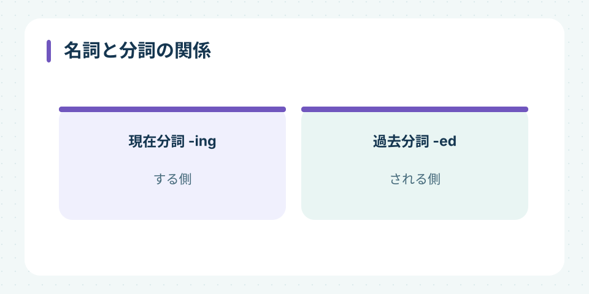

英語 / UNIVERSITY ENTRANCE EXAM
現在分詞と過去分詞の違い｜後置修飾も解説
分詞は動詞から作られて名詞を説明する語です。-ing がいつも「進行」、過去分詞がいつも「過去」とは限りません。名詞との関係を考えることが重要です。
EN
このページで学べること
-ing と -ed を意味から選ぶ。要点を読んだら、最後の確認問題で理解度をチェックしましょう。
POINT 01
分詞を選ぶのは「する側」か「される側」か

現在分詞（-ing）は名詞がその動作をする側、過去分詞はその動作をされる側であることが基本です。
比較
a crying baby（泣いている赤ちゃん）
a broken window（壊された窓）
POINT 02
後置修飾は名詞の後ろから説明
分詞が他の語を伴って長くなると、名詞の後ろに置いて説明することが多くなります。
例｜現在分詞
The girl standing by the door is my sister.
ドアのそばに立っている女の子例｜過去分詞
This is a book written in English.
英語で書かれた本POINT 03
感情を表す分詞形容詞
interesting は「興味を引く」、interested は「興味を持った」。exciting / excited も同様です。人が主語でも「興味を引く人」の意味なら interesting になります。
I am interested in music. / Music is interesting. の主語と意味を比べましょう。
PRACTICE
確認問題に挑戦！
全3問。答えを考えてから「解答と解説を見る」を押してね。
Q01
a ( ) door「閉じられたドア」
解答と解説を見る ＋
正解・解答例
closed
ドアは閉じられる側なので過去分詞。
Q02
The boy ( ) over there is Ken.「あそこで走っている少年」
解答と解説を見る ＋
正解・解答例
running
少年は走る側なので現在分詞。
Q03
I am (interest / interested) in history.
解答と解説を見る ＋
正解・解答例
interested
主語が興味を持った状態なので interested。
今日のまとめ
分詞は名詞との意味関係で選ぶ。動作する側が -ing、される側が過去分詞。
ここまで読めたら、ひと区切り。
理解できたら学習済みにチェックして、次の記事へ。
記事について
StudyMasterの無料学習コンテンツです。AIを補助的に用いて作成しています。例題・解答は公開前にご自身でも確認してください。内容に誤りがある場合は、学校の教科書などと照合してください。
公開・更新：2026年11月12日